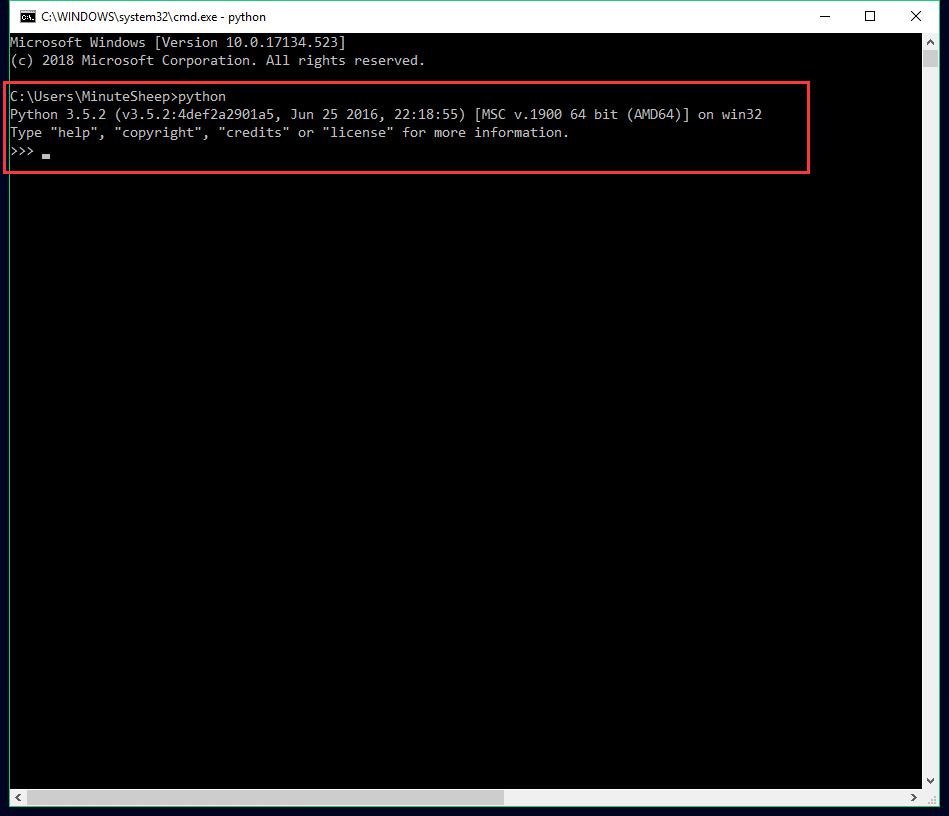
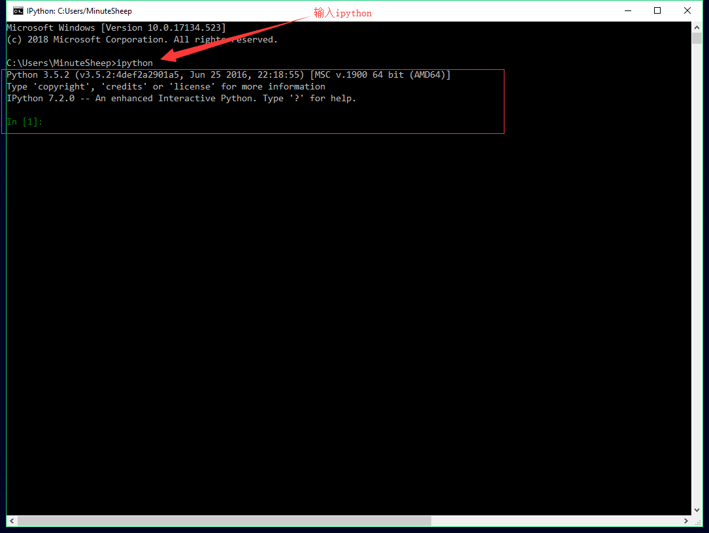
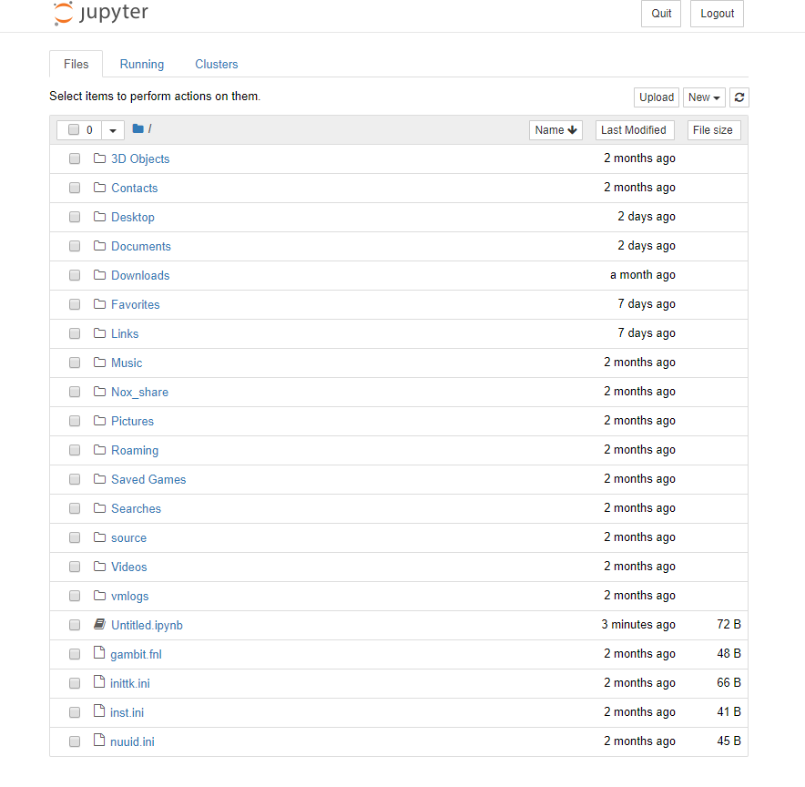
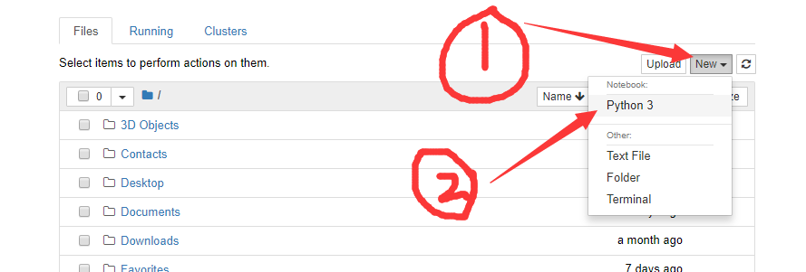
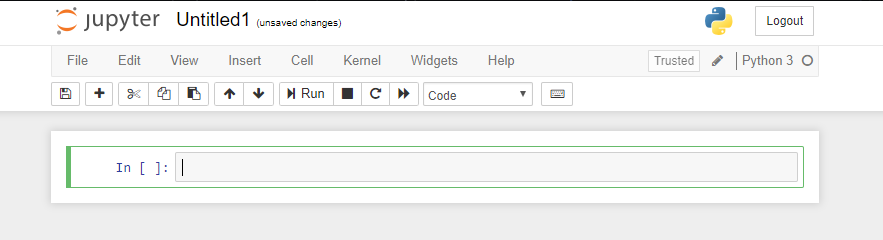
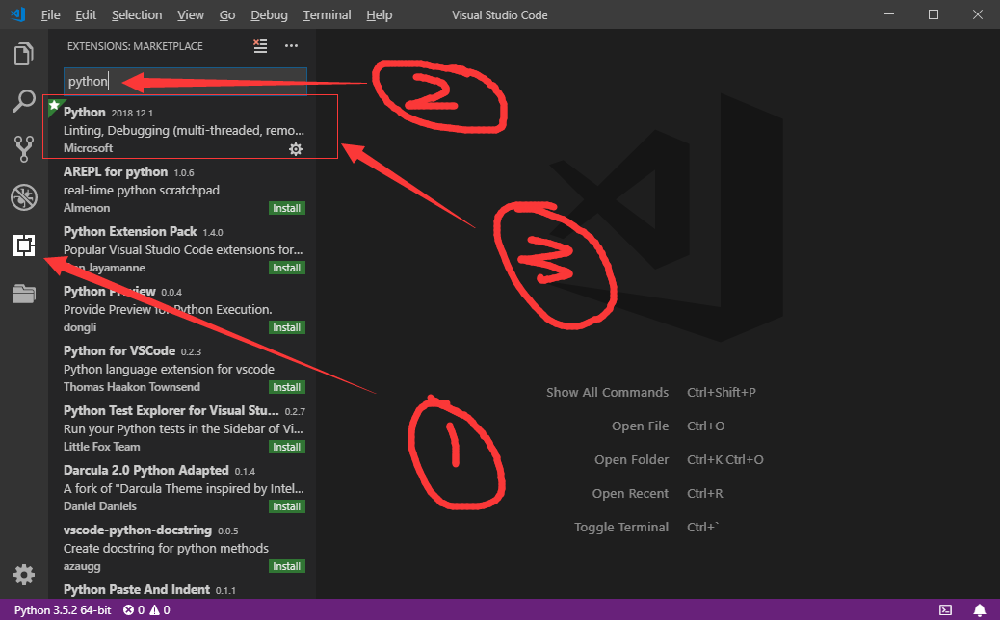
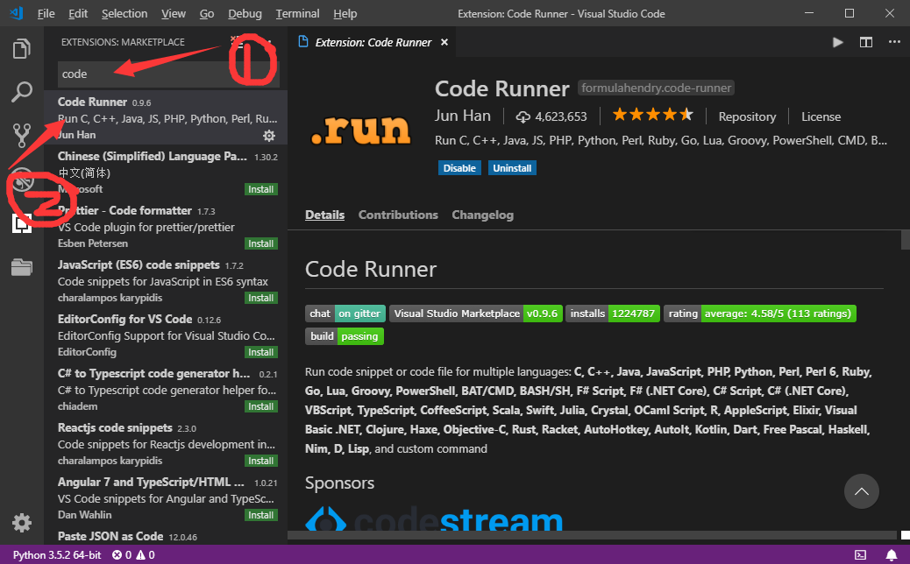
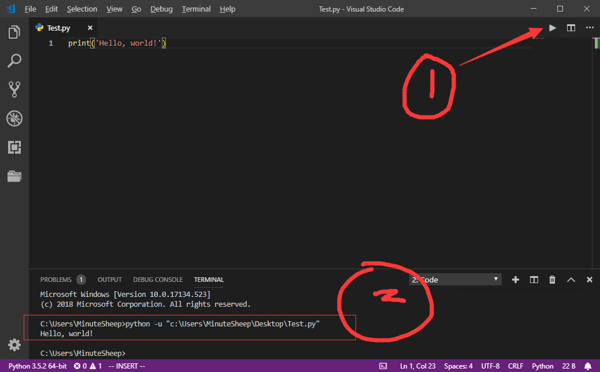

#3 Python解释器和编辑器
上文介绍了Python在不同平台的安装方法，本文将带领你了解Python解释器和编辑器的概念，并且选择出最符合自己的解释器和编辑器！
一、Python解释器
其实上文介绍的安装Python，实质上安装的是Python解释器。当你创建一个Python程序文件后，要指定一个专门的解释器去将其翻译成机器码，从而让电脑去执行程序，这就是解释器。接下来将会介绍几种常用的Python解释器。
1. Python Shell
只要正确安装完Python，就会拥有一个Python Shell，在命令行直接输入python即可进入，如下所示：

虽然标准的Python Shell看起来很高大上，但是，它有很多不足，主要包括：
- 没有语法高亮
- 不支持Tab自动补全
- 没有自动缩进功能
- 不能保存历史记录
- 无法很好地与操作系统交互
- 无法导入外部文件中的程序
2. IPython
为了克服以上不足，出现了新的解释器：IPython，它是Python Shell的增强版，不但解决了上面的问题，而且还提供了非常丰富的功能，盘它！
1>. 安装
IPython是一个第三方工具，因此在使用之前需要先安装，可以直接在命令行使用pip进行安装。如下所示：
1 | pip install ipython |
2>. 使用
安装完成后，在命令行直接输入ipython后回车，会出现以下界面证明安装成功：

用过IPython的都说好！！！IPython这该死的无处安放的魅力，啊~
关于IPython的具体用法之后的文章会一点一点提到，不要着急哦亲~
3. Jupyter
你以为整个世界达到高潮就完事了？Of Course Not！来一些饭后甜点来平缓这颗躁动不安的心吧——jupyter
Jupyter其实就是以前的IPython Notebook，其内部解释器依然是IPython，只不过它是通过浏览器访问本地或者远端的IPython进程，并且利用其特有的图形界面增强IPython的可视化输出。Jupyter文件可以完整记录了计算过程中所有的相关信息，而且能够支持图片、视频和公式等副文本格式，是数据分析、科学计算和编程教学的优秀工具。（如果你给你的女票讲解Python，可以尝试这个哟~）
1>. 安装
Jupyter和IPython分离以后，就需要单独安装了，在命令行使用pip安装即可：
1 | pip install jupyter |
安装完成后在命令行输入jupyter notebook后将会自动打开浏览器，如下所示：

2>. 使用
点击new–>选择Python版本（我这里是Python3）：

之后进入如下界面：

是不是和IPython的交互界面很像？在这里输入Python语句后，单击Run即可运行，系不系很棒棒。
二、Python编辑器
在Python的交互式命令行写程序，好处是立刻就能得到结果，坏处是没办法保存，下次想要再次运行的时候，有必须重敲一遍代码，很烦耶( •̀ ω •́ )y。
在实际的使用中，我们总会使用一个Python文本编辑器来编写代码，之后保存，可以重复使用了。（这样你就可以将你的表白程序拷给你女票啦）
而Python编辑器数不胜数，其中包含双手不离键盘的远古编辑器Vim、短小精悍的NotePad++、专为Python而生的PyCharm、称赞不绝的Sublime Text以及巨高颜值的VSCode。
这几款编辑器小编都用过，始于NotePad++，敬于Vim，合于PyCharm，久于Sublime Text，终于VSCode！咳咳，扯远了，其实我现在的状态是：心属Vim，身属VSCode。
盘它！
1. VSCode
1>. 下载安装包：
进入VSCode官网下载对于的版本即可：https://code.visualstudio.com/
双击运行安装即可，这里不作过多解释
2>. 配置成Python编辑器：
进入VSCode，点击扩展，输入python，选择第一个安装即可，如下图所示：

安装完成以后，在搜索框输入Code Runner，安装它：

3>. 使用：
写完python程序以后，点右上角小箭头即可运行：

以上是对VSCode的简单配置，虽然有些简陋，但对于萌新应该是够了。
结语
以上三篇文章包含了Python简介、安装Python以及选择Python解释器和编辑器，接下来就要开始编程生活了，下一篇文章将会带领你编写第一个Python程序~，系不系很期待😜